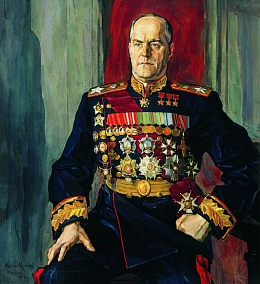

Жуков Георгий Константинович |
||
Навигация |
Жуков Георгий Константинович |
Жуков Георгий Константинович |
|
Самый прославленный советский военачальник Второй мировой войны, Георгий Жуков был уважаем как западными союзниками, так и противником. Немцы знали, что если на фронт приехал Жуков, то обязательно будет наступление. За плечами маршала был внушительный список достижений, среди которых разгром японских войск в битве на Халхин-Голе, спасение осажденного Ленинграда от падения в 1941 году, а затем и прорыв его блокады в 1943 году, контрнаступление советских войск под Москвой, победа на Курской дуге и взятие Берлина.  Жукова как пожарного перебрасывали тушить пожар на самые опасные участки фронта, где его решительность, жесткость, целеустремленность и особая интуиция полководца часто помогали избежать катастрофы. Однако и у него случались неудачи, как это произошло в ноябре-декабре 1942 года в ходе операции «Марс», когда попытка окружить и разгромить 9-ю армию Вермахта подо Ржевом провалилась. После распада Советского Союза сформировалось мнение, что фигура Георгия Жукова слишком переоценена, что на самом деле он бездарный «мясник», никогда не жалевший своих солдат. По мнению историка Алексея Исаева, такие рассуждения — это черный миф о войне. «Если смотреть относительно численности фронта, потери в процентном отношении – они у него стабильно ниже, чем у других военачальников, у Конева, у Малиновского. Поэтому ему доверяли фронт численностью миллион человек, знали, что он этим фронтом сможет ворочать, понесет умеренные потери, потому что он профессионал реально высочайшего класса», — утверждает историк. |
Великий русский полководец Сильнейший духом человек: Таким он в памяти народной Навек останется, навек! Не очернят святое имя Его различной клеветой И разной писаниной лживой! Георгий Жуков - наш герой! |
|
|
IT-CUBE г.Балашова HTML , CSS |
||